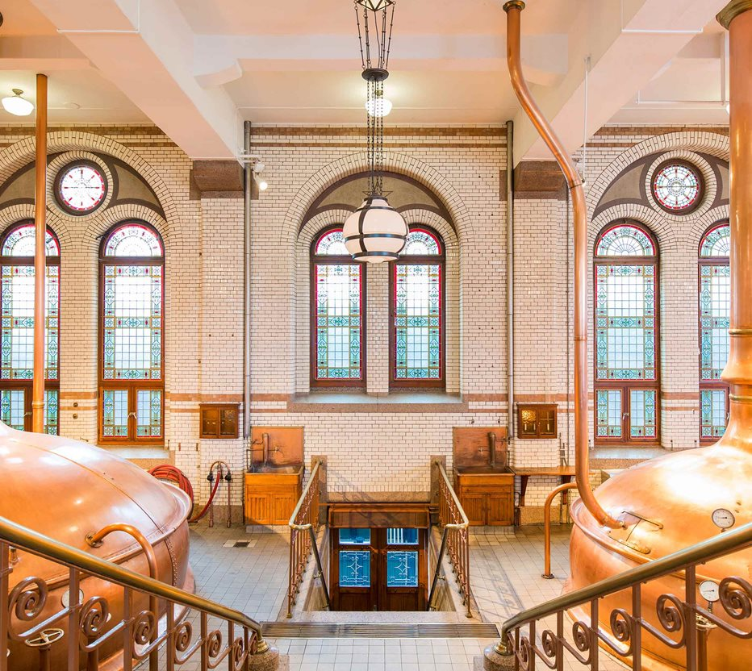

Er zit meer achter de ster
Onze producten
Het meest iconische bier ter wereld biedt je tal van mogelijkeheden, wat je smaak ook is. Van het origineel naar de thuistap tot de alcoholvrije Heineken® 0.0. Het is een feestje van verfrissing voor je smaakpapillen. Ontdek dat feestje nu.


- 
-
Een perfect gebrouwen geschiedenis.
Heineken® historie
De historie van Heineken® staat gelijk aan die van innovatie in bierbrouwen. Van 1873, toen Gerard Heineken zijn zinnen had gezet op het maken van de ultieme premium pilsener,tot vandaag, waar meesterbrouwer Willem van Waesberghe een oogje in het zeil houdt. Heinekens unieke smaak komt voort uit eenvoud, kwaliteit en toewijding aan puur natuurlijke ingrediënten: de perfecte mix van mout, gerst, hop en onze eigen speciale A-gist.
Historie